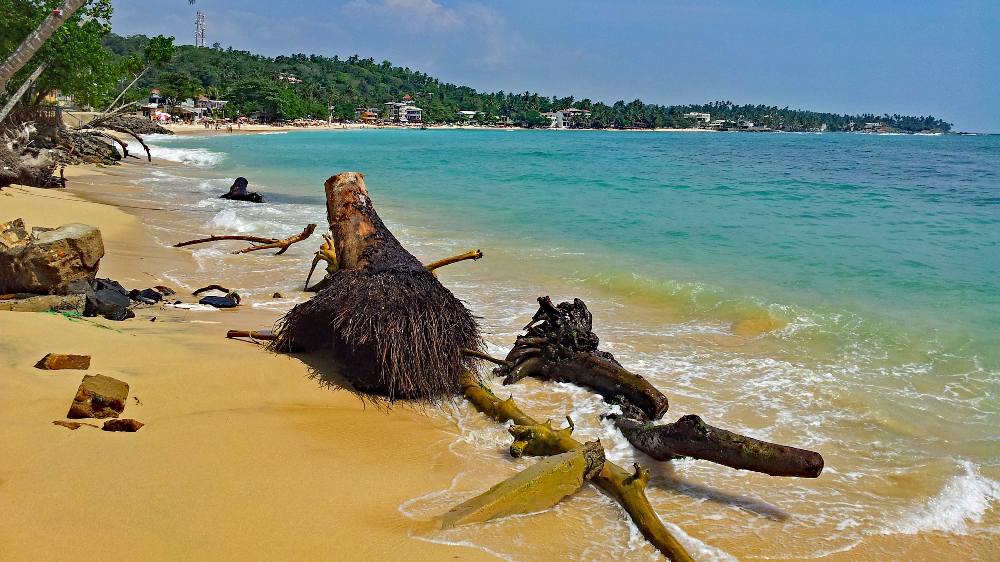
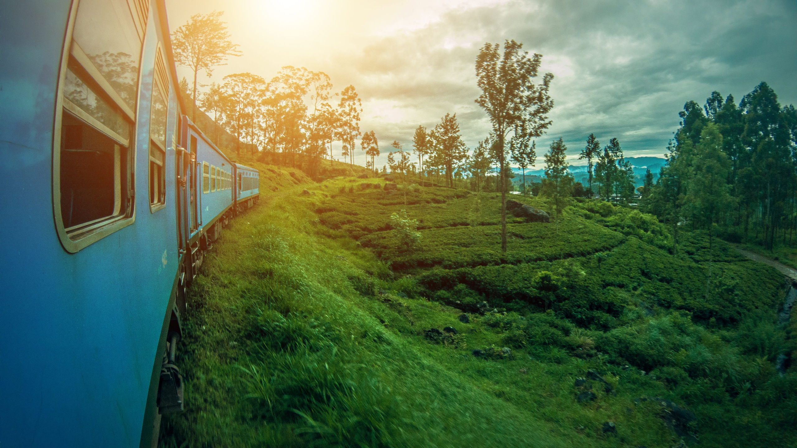
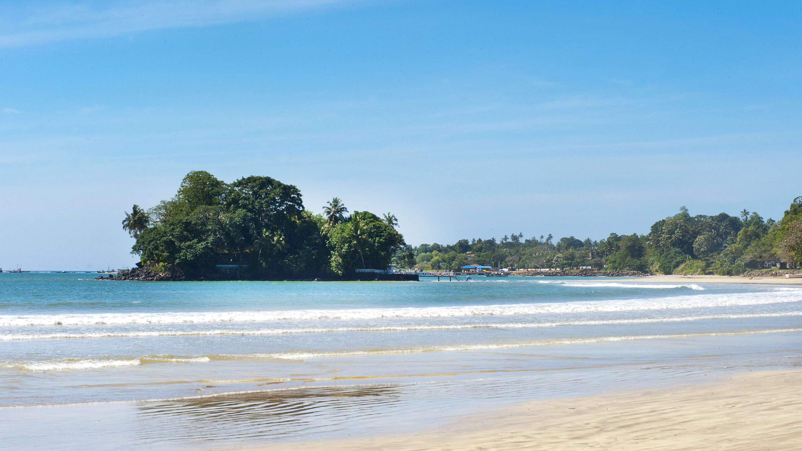
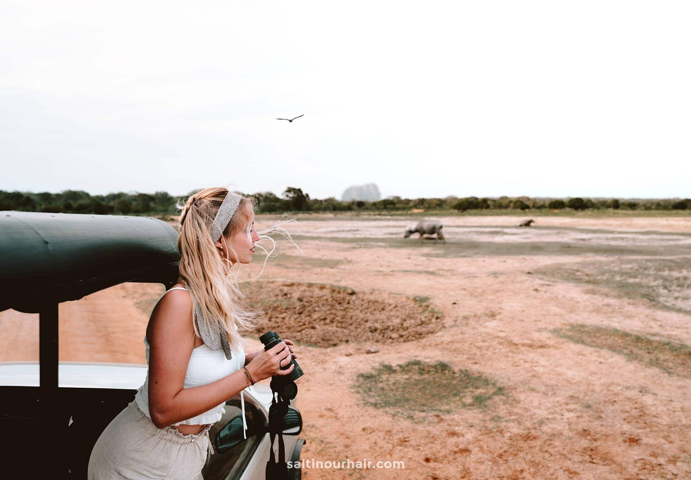
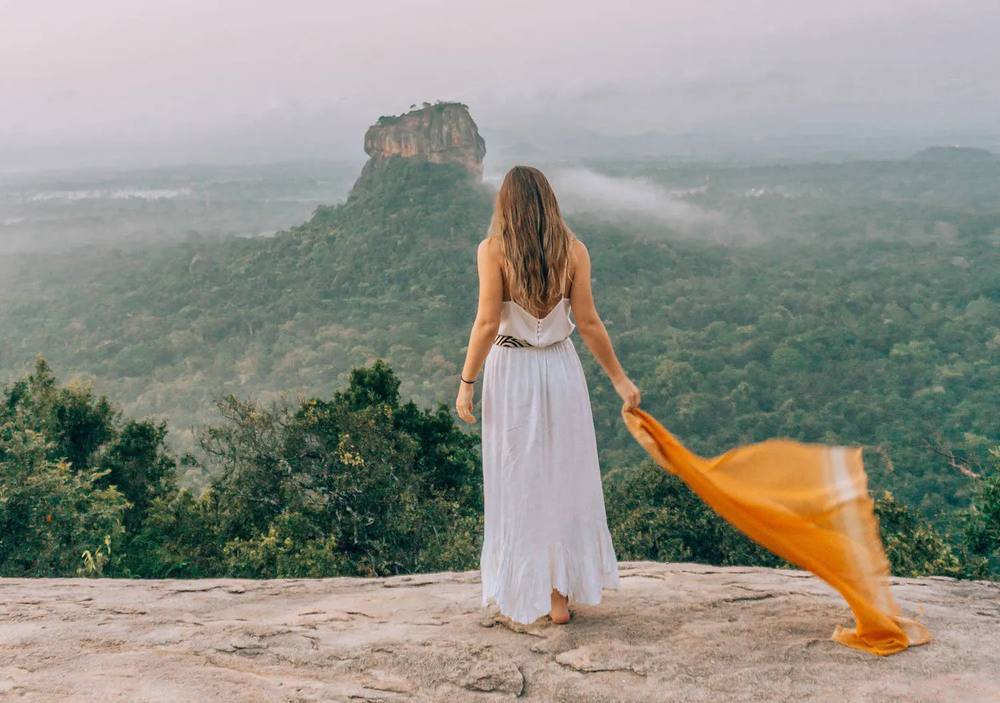
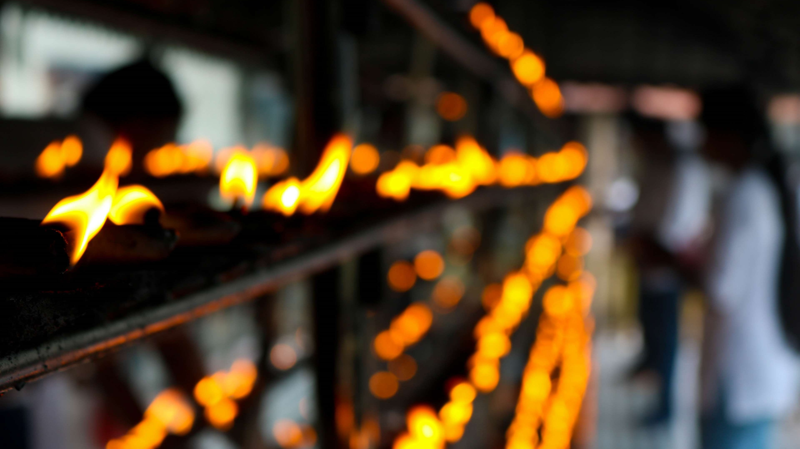
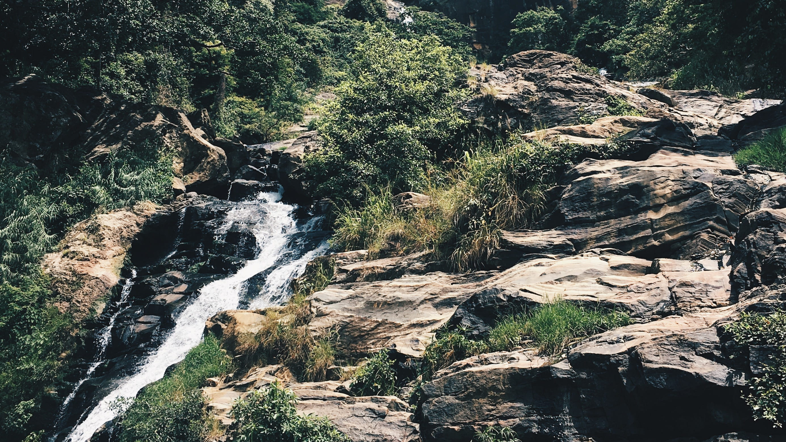

Unawatuna
Unawatuna Beach is a breathtaking coastal gem located along the southern shores of Sri Lanka, approximately 5 kilometers (3 miles) south of the historic city of Galle. Known for its stunning natural beauty, clear blue waters, and soft golden sands, Unawatuna Beach has gained popularity as one of the country's top beach destinations. With its crescent-shaped bay surrounded by lush green palm trees and rocky headlands, Unawatuna offers a postcard-worthy setting that beckons travelers seeking a serene and relaxing beach getaway. The calm and shallow waters make it an excellent spot for swimming and snorkeling, especially for those who are not strong swimmers or have kids with them. In addition to its beauty, Unawatuna Beach holds historical significance. According to local legends, the beach was one of the landing spots for Prince Vijaya, the legendary founder of the Sinhalese civilization, making it a place of cultural importance for Sri Lankans. Unawatuna's beachfront is dotted with beach bars, restaurants, and boutique accommodations that offer a range of cuisines and lodging options, catering to various tastes and budgets. The lively atmosphere and friendly locals create a welcoming ambiance for visitors to unwind and enjoy the coastal charm. For those looking to explore beyond the beach, there are several interesting activities and nearby attractions. A short distance away is the historic Galle Fort, a UNESCO World Heritage Site, which features well-preserved colonial architecture, charming cobblestone streets, art galleries, and boutique shops. Nature lovers can venture to the nearby Rumassala Hill, which offers panoramic views of the coastline and is believed to be the location of the Ramayana legend. The Japanese Peace Pagoda, located atop the hill, adds to the spiritual aura of the area. During certain times of the year, Unawatuna is also a prime spot for watching sea turtles, as they come ashore to lay their eggs. Responsible turtle-watching tours can be arranged to observe these majestic creatures in their natural habitat. Unawatuna Beach's allure lies not only in its picturesque beauty but also in its ability to cater to different interests, from relaxation and sunbathing to water sports and cultural explorations. It is a destination that captivates visitors with its idyllic coastal charm and leaves them with lasting memories of their Sri Lankan sojourn.

Ella
Ella is a charming and picturesque hill station located in the central highlands of Sri Lanka. Nestled amidst lush green tea plantations and misty mountains, Ella is a popular destination that attracts travelers seeking natural beauty, serenity, and a refreshing escape from the tropical heat of the lowlands. The journey to Ella itself is a treat, as the town is accessible by a scenic train ride that takes you through breathtaking landscapes, including tea-covered hills, cascading waterfalls, and deep valleys. The train journey is often considered one of the most scenic in the world and is a must-do for many visitors to Sri Lanka. Upon arriving in Ella, travelers are greeted with a laid-back atmosphere and a sense of tranquility. The town's relatively cooler climate, compared to the coastal regions, makes it an ideal spot to relax and unwind. The stunning vistas from various viewpoints around Ella, such as the famous Ella Gap and Little Adam's Peak, are perfect for hiking and capturing unforgettable photographs. Ella is also known for its vibrant tea culture, and a visit to one of the local tea estates or factories offers an opportunity to learn about the tea-making process and taste some of the finest Ceylon tea. Many travelers enjoy taking leisurely walks through the tea plantations, immersing themselves in the lush greenery and enjoying the fresh mountain air. Another must-visit attraction in Ella is the impressive Ravana Ella Falls, a cascading waterfall surrounded by dense vegetation. Visitors can take a short hike to reach the base of the falls and enjoy the refreshing spray of water. The town of Ella itself has a laid-back vibe, with small guesthouses, boutique hotels, and cafes offering comfortable accommodations and delicious Sri Lankan cuisine. The local market is a great place to shop for souvenirs, spices, and handicrafts. Adventure enthusiasts will find plenty to do in Ella as well, with opportunities for trekking, rock climbing, and exploring the nearby caves and natural pools. The famous Nine Arch Bridge, an architectural marvel, is another popular spot to witness the passing of the iconic blue train and offers an excellent photo opportunity. Whether you seek relaxation, adventure, or simply a chance to be close to nature, Ella in Sri Lanka provides an idyllic setting that captures the hearts of travelers and leaves them with cherished memories of this enchanting hill station.
Udawalawa Elephants
Udawalawe is renowned for its flourishing population of Sri Lankan elephants, and observing these majestic creatures in their natural habitat is one of the main attractions of visiting the Udawalawe National Park. The elephants of Udawalawe are a highlight for tourists and wildlife enthusiasts due to their significant presence and unique behaviors. The Sri Lankan elephant (Elephas maximus maximus) is one of three recognized subspecies of the Asian elephant. They are generally smaller than their African counterparts but are still impressively large and powerful animals. These gentle giants are an essential part of Sri Lanka's cultural and ecological heritage, and they hold a special place in the hearts of the local people. In Udawalawe National Park, the elephants roam freely across vast grasslands, scrublands, and pockets of dense forests. The park's diverse ecosystem provides an abundant supply of food and water, allowing the elephants to thrive in a relatively protected environment. One of the unique characteristics of Udawalawe's elephants is their social structure. They are known to live in cohesive family groups, led by a matriarch. The matriarch plays a vital role in guiding the group to food and water sources and ensuring the safety of the herd. These family units often consist of adult females, their offspring, and sometimes, young adult males. A safari in Udawalawe offers visitors the opportunity to witness these family groups in their natural interactions. Watching baby elephants playfully interacting with their mothers or other members of the herd is a heartwarming experience. The park is also home to a few lone bull elephants, who often prefer a more solitary existence. These bulls can be seen wandering independently through the park, sometimes joining the family groups temporarily during mating seasons. Udawalawe's elephants are known for their intelligence and adaptability. They have developed various strategies to survive in their changing environment, where human-wildlife interactions can sometimes occur. Park rangers and conservationists work diligently to ensure the safety and well-being of both elephants and visitors, promoting responsible tourism and ethical wildlife practices. It's important to note that, while observing these magnificent animals is a fantastic experience, it's crucial to respect their space and maintain a safe distance to avoid any disturbances or potential harm to the elephants or their habitat. In conclusion, the Udawalawe elephants are an integral part of the park's rich biodiversity and are cherished by both locals and tourists alike. Witnessing these gentle giants in their natural setting is a humbling and awe-inspiring experience, leaving a lasting impression on those fortunate enough to encounter them during their visit to Sri Lanka.

Hikkaduwwa Beach
Hikkaduwa Beach is a vibrant and popular coastal destination located on the southwestern coast of Sri Lanka. Situated approximately 100 kilometers (62 miles) south of the capital city, Colombo, Hikkaduwa is well-known for its picturesque sandy beach, clear turquoise waters, and thriving marine life, making it a sought-after spot for beach lovers, water sports enthusiasts, and snorkelers. The beach at Hikkaduwa stretches for several kilometers, offering ample space for visitors to relax under the sun, take leisurely strolls along the shore, or engage in various beach activities. The sea here is relatively calm during certain months, making it suitable for swimming and bathing. However, visitors should be mindful of the changing sea conditions and any warning signs for their safety. Hikkaduwa is renowned for its coral reefs, which lie just a short distance from the shoreline. These coral reefs are teeming with diverse marine species, making it a popular destination for snorkeling and scuba diving. Underwater explorers can encounter colorful coral formations, tropical fish, sea turtles, and even occasional sightings of manta rays and reef sharks. To preserve this fragile ecosystem, it is essential for visitors to adhere to responsible snorkeling and diving practices. Aside from its underwater wonders, Hikkaduwa has a vibrant beach culture. The shoreline is lined with beach bars, restaurants, and cafes, offering a range of delectable seafood and traditional Sri Lankan cuisine. The beachfront is also a hub of activity, with water sports operators offering thrilling experiences like jet skiing, banana boat rides, and glass-bottom boat tours to view the marine life without getting wet. Hikkaduwa's lively atmosphere extends into the evenings, with beach parties, live music performances, and a chance to mingle with fellow travelers and locals. It's a great place to unwind, enjoy the sea breeze, and experience the warm hospitality of Sri Lanka. Beyond the beach, Hikkaduwa town offers a variety of accommodation options to suit different budgets, from luxury resorts to guesthouses and beachfront bungalows. The town also has a bustling market where visitors can shop for souvenirs, handicrafts, clothing, and fresh fruits. Overall, Hikkaduwa Beach is a fantastic destination for those seeking a perfect blend of relaxation, adventure, and lively beach culture. Its stunning coastline, rich marine life, and welcoming atmosphere make it a must-visit spot on any Sri Lankan itinerary.

Yaala National Park
Yala National Park, located in the southeastern region of Sri Lanka, is a mesmerizing and diverse wilderness sanctuary that captivates the hearts of nature enthusiasts and wildlife lovers from around the world. Covering an expansive area of approximately 978 square kilometers, Yala is the second-largest and most visited national park in Sri Lanka, renowned for its stunning landscapes, rich biodiversity, and remarkable wildlife encounters. The park's landscape is a tapestry of various ecosystems, ranging from dense forests and arid grasslands to pristine coastal regions and serene freshwater lagoons. This mosaic of habitats provides a haven for an incredible array of wildlife species, making Yala a true wildlife treasure trove. One of the most iconic and elusive inhabitants of Yala National Park is the Sri Lankan leopard (Panthera pardus kotiya). This magnificent big cat, endemic to the island, is a symbol of pride for Sri Lanka and a major draw for wildlife enthusiasts seeking a glimpse of its unparalleled beauty and grace. Yala boasts one of the highest densities of leopards in the world, offering visitors a rare opportunity to witness these majestic predators in their natural environment. Apart from leopards, Yala is home to a remarkable diversity of animals, including Asian elephants, sloth bears, spotted deer, sambar deer, wild boars, water buffaloes, and various species of primates. The avian population is equally impressive, with over 215 bird species, both resident and migratory, adorning the skies and adding vibrant splashes of color to the landscape. Exploring Yala National Park is a breathtaking adventure, as visitors embark on jeep safaris led by experienced guides who expertly navigate the park's winding trails. During these safaris, visitors can observe wildlife up close, capturing the mesmerizing behaviors of animals in their natural habitat while respecting their space and minimizing human impact. As much as Yala National Park is a paradise for wildlife enthusiasts, it is also a testament to Sri Lanka's commitment to conservation and sustainable tourism. The park's management and local communities work hand in hand to protect this precious ecosystem from threats such as poaching, habitat loss, and human-wildlife conflicts. Responsible eco-tourism practices are encouraged to ensure that future generations can continue to appreciate the wonders of Yala while safeguarding its delicate balance. In conclusion, Yala National Park is a captivating realm where the untamed beauty of nature unfolds before your eyes. Whether it's the enigmatic leopards, the harmonious symphony of birdsong, or the tranquil ambiance of the wilderness, Yala offers an unforgettable journey into the heart of Sri Lanka's natural heritage. As you wander through this breathtaking sanctuary, you will undoubtedly come to understand why Yala holds a special place in the hearts of those who seek a true connection with the wild.

Sigirya
Sigiriya, also known as the Lion Rock, is a UNESCO World Heritage Site and one of Sri Lanka's most iconic and historically significant landmarks. Located in the central part of the country, Sigiriya rises majestically from the surrounding plains, standing at an impressive height of about 200 meters (660 feet). The ancient rock fortress of Sigiriya dates back to the 5th century AD and was built by King Kashyapa I. The site served as the king's palace and capital for a brief period. Today, Sigiriya is considered one of the best-preserved examples of urban planning and engineering from the ancient world. The ascent to the top of Sigiriya is an awe-inspiring journey that takes visitors through well-preserved ancient gardens, ponds, and waterways. The palace complex was once adorned with beautiful frescoes, and some of them still remain, showcasing the skill and artistry of the ancient craftsmen. These frescoes, known as the "Sigiriya Maidens," depict female figures in vibrant colors and provide valuable insights into the lifestyle and culture of the time. As visitors climb higher, they encounter the famous Mirror Wall, a polished wall that was once so reflective that the king could see himself as he walked past. Over the centuries, visitors have left graffiti and inscriptions on the Mirror Wall, giving valuable historical and cultural records that date back to ancient times. The final ascent to the summit of Sigiriya involves ascending steep stairs and narrow pathways. At the top, visitors are rewarded with breathtaking panoramic views of the surrounding countryside and lush forests. At the peak, there are the remnants of the ancient royal palace, including the foundation of the king's throne and the iconic lion's paws, which are all that remain of a massive lion statue that once guarded the entrance. The significance of Sigiriya goes beyond its architectural and engineering marvels. The site holds cultural and religious importance for Sri Lankans. It is believed to have been a Buddhist monastery after King Kashyapa's reign, and today, there is a small temple at the base of the rock where devotees and visitors can pay their respects. The beauty, historical value, and intriguing legends surrounding Sigiriya have made it a must-visit destination for both domestic and international travelers. Its unique blend of natural splendor and ancient human ingenuity make it a captivating and unforgettable experience for all who make the journey to this remarkable rock fortress.

Pahan Poojawa
Pahan Poojawa is a serene and beautiful ceremony where img_list of oil lamps are lit, creating a mesmerizing sight that represents dispelling darkness and ignorance, symbolizing the pursuit of enlightenment and wisdom. Typically, Pahan Poojawa is held in Buddhist temples, especially during Vesak, the celebration of the birth, enlightenment, and death of Lord Buddha. Vesak is one of the most important religious festivals in Sri Lanka and is celebrated with great enthusiasm and devotion. During this time, temples and homes are adorned with colorful lights and oil lamps to honor the teachings of Buddha. The lighting of Pahan is accompanied by various other religious rituals, including chanting of stanzas from Buddhist scriptures (Pirith) and offerings of flowers and incense. The atmosphere is filled with tranquility, and the soft glow of the oil lamps creates a sense of spiritual harmony. As with many religious practices, the significance of Pahan Poojawa goes beyond the literal act of lighting lamps. It symbolizes the pursuit of inner peace, compassion, and understanding, inviting devotees to reflect on the teachings of Buddha and their own spiritual journey.

Rawana Ella
Ravana Ella, also known as Ravana Falls, is a magnificent waterfall located in the central highlands of Sri Lanka, near the town of Ella. This iconic waterfall holds significant cultural and historical importance, as it is associated with the ancient Sri Lankan legend of King Ravana from the Hindu epic, Ramayana. According to the legend, King Ravana was a powerful and wealthy ruler who abducted Princess Sita, the wife of Lord Rama. He kept her captive in his kingdom, which is believed to be located in the area now known as Sri Lanka. The Ravana Ella waterfall is said to be the place where Sita bathed during her captivity. The Ravana Ella waterfall is an impressive sight, cascading down from a height of approximately 25 meters (82 feet) over multiple rock formations. Surrounded by lush greenery and tall trees, the falls create a picturesque setting that captivates visitors with its natural beauty. To reach the waterfall, visitors can follow a short trail through the verdant forest, which offers glimpses of the magnificent sight before finally leading to the base of the falls. The experience of standing near the thundering cascade and feeling the refreshing spray of water is both awe-inspiring and invigorating. The area around Ravana Ella waterfall is not only famous for its natural beauty but also for its historical significance and cultural appeal. Visitors often come to the falls to immerse themselves in the ancient legends and myths surrounding King Ravana and the Ramayana. In addition to its cultural allure, Ravana Ella is a popular destination for adventure enthusiasts and nature lovers. The surrounding landscape provides opportunities for hiking, birdwatching, and enjoying the serene atmosphere of the forested area. Nearby, visitors can explore other attractions such as Ravana Cave, a network of tunnels believed to have been used by King Ravana, and Ravana Ella Cave Temple, a small temple with historical and religious significance. Overall, Ravana Ella waterfall is a must-visit destination for travelers seeking a blend of natural beauty, cultural history, and the mystique of ancient legends. It offers a memorable experience in the heart of Sri Lanka's enchanting highlands, leaving visitors with lasting memories of this breathtaking waterfall and its captivating surroundings.